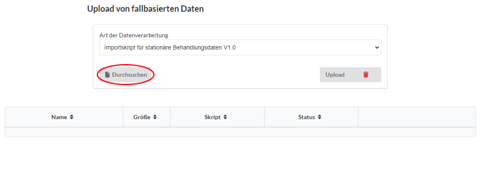
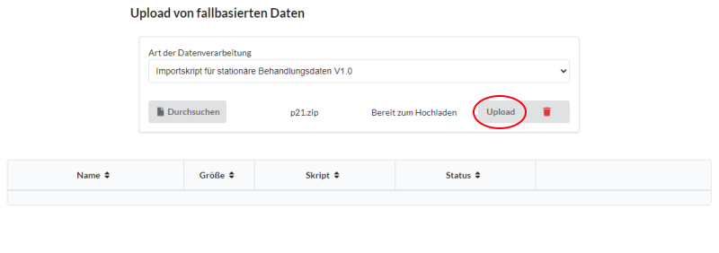
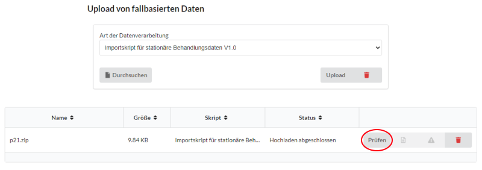
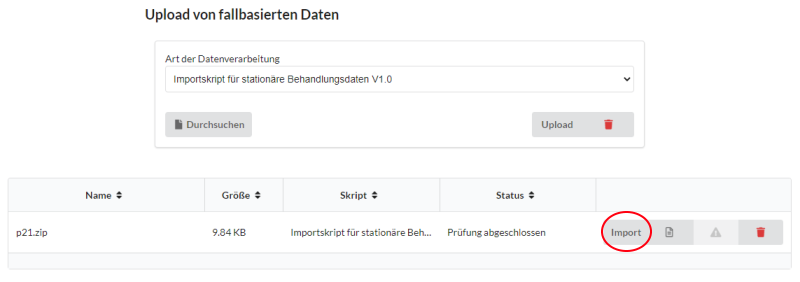
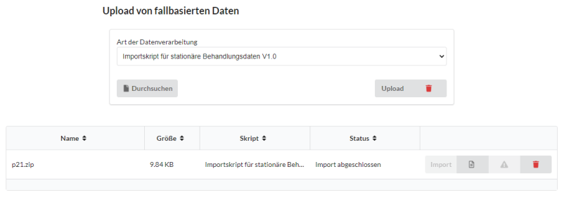

Import von fallbasierten Behandlungsdaten
Für das Hochladen und Importieren fallbasierter Behandlungsdaten gemäß §21 KHEntgG wird seit der AKTIN DWH-Version 1.4 eine Schnittstelle samt Importskript bereitgestellt. Auf dieser Seite finden Sie eine Anleitung sowie wichtige Hinweise zur Nutzung dieser Schnittstelle.
Vorraussetzungen für das Importieren fallbasierter Daten
Vergewissern Sie sich vor der Nutzung der Schnittstelle, dass Sie ein AKTIN Data Warehouse in der Version 1.4 oder höher betreiben und sich das Importskript p21import.py auf Ihrem Server befindet (standardmäßig unter /var/lib/aktin/import-scripts). Sollte das Importskript nicht mehr auffindbar sein oder es zu anderweitigen Problemen kommen, melden Sie dies bitte an den AKTIN IT-Support
Anforderungen an den Datensatz
Um eine einheitliche, performante und fehlerlose Datenverarbeitung zu gewährleisten, wurden vorab einige Anforderungen an den zu importierenden Datensatz definiert. Diese Anforderungen orientieren sich an den Anforderungen des §21 KHEntgG und sind im Folgenden beschrieben. Weitere Informationen zum §21-Datensatz und den Anforderungen finden Sie unter diesem Link
- Die Daten werden im .csv-Format importiert
- Als Trennzeichen zwischen Datenfeldern wird das Semikolon (;) verwendet
- Als Dezimaltrennzeichen wird das Komma (,) verwendet
- Für die Zeichencodierung wird UTF-8 verwendet
- Die .csv-Dateien müssen sich in einem zip-Archiv befinden
- In dem zip-Archiv muss sich mindestens eine .csv-Datei mit den Namen FALL.csv befinden. Optional können sich in dem Archiv noch Dateien mit dem Namen FAB.csv, ICD.csv und OPS.csv befinden. Anderweitige Dateien werden vom Importskript ignoriert
- Es werden nur valide Fälle importiert, d.h. die notwendigen Felder eines Falles sind vollständig und entsprechen den Formatvorgaben. Gleichzeitig muss der Fall im Vorfeld über die CDA-Schnittstelle importiert worden sein
- Die Zuordnung zu bereits vorhandenen Fällen in der Datenbank erfolgt über das Feld KH-internes-Kennzeichen. Es ist darauf zu achten, dass das Format in KH-internes-Kennzeichen mit dem Format der Fallnummern aus den importierten CDA-Dokumenten identisch ist
- Die nachfolgende Tabelle stellt die Anforderungen an die Spalten der jeweiligen .csv-Dateien dar. Sonderzeichen sind in keiner Spalte erlaubt. Ein invalides Feld führt dazu, dass der gesamte Fall vom Import ausgeschlossen wird. Ein invalides optionales Feld wird ignoriert. Nicht aufgeführte Spalten sind optional und vom Import ausgeschlossen.
| CSV-Datei | Spaltenname (§21-Variable) | Darf leer sein? | Formatvorgabe | Anmerkung |
|---|---|---|---|---|
| FALL.csv | KH-internes-Kennzeichen | Nein | keine | Dient zur Verknüpfung der csv-Dateien. Wird nicht importiert |
| FALL.csv | IK-der-Krankenkasse | Ja | keine | - |
| FALL.csv | Geburtsjahr | Ja | 4-stellige Zahl (YYYY) | - |
| FALL.csv | Geschlecht | Ja | m,w,d oder x | - |
| FALL.csv | PLZ | Ja | 5-stellige Zahl | - |
| FALL.csv | Aufnahmedatum | Nein | 12-stellige Zahl (YYYYmmddHHMM) | - |
| FALL.csv | Aufnahmegrund | Nein | 4-stelliger Code | - |
| FALL.csv | Aufnahmeanlass | Nein | E,Z,N,R,V,A,G oder B | - |
| FALL.csv | Fallzusammenführung | Ja | J oder N | Wird nur importiert, wenn "Fallzusammenführungsgrund" nicht leer ist |
| FALL.csv | Fallzusammenführungsgrund | Ja | OG, MD, KO, RU, WR, MF, PW, PR, PM, ZO, ZM, ZK, ZR, oder ZW | Wird nur importiert, wenn "Fallzusammenführung" den Wert "J" hat |
| FALL.csv | Verweildauer-intensiv | Ja | Ganze Zahl oder kaufmännisch gerundet | - |
| FALL.csv | Entlassungsdatum | Ja | 12-stellige Zahl (YYYYmmddHHMM) | Wird nur importiert, wenn "Entlassungsgrund" nicht leer ist |
| FALL.csv | Entlassungsgrund | Ja | 3-stelliger Code | Wird nur importiert, wenn "Entlassungsdatum" nicht leer ist |
| FALL.csv | Beatmungsstunden | Ja | Ganze Zahl oder kaufmännisch gerundet | - |
| FALL.csv | Behandlungsbeginn-vorstationär | Ja | 8-stellige Zahl (YYYYmmdd) | - |
| FALL.csv | Behandlungstage-vorstationär | Ja | Ganze Zahl | Wird nicht importiert, wenn "Behandlungsbeginn-vorstationär" leer ist |
| FALL.csv | Behandlungsende-nachstationär | Ja | 8-stellige Zahl (YYYYmmdd) | - |
| FALL.csv | Behandlungstage-nachstationär | Ja | Ganze Zahl | Wird nicht importiert, wenn "Behandlungsende-nachstationär" leer ist |
| FAB.csv | KH-internes-Kennzeichen | Nein | keine | Dient zur Verknüpfung der csv-Dateien. Wird nicht importiert |
| FAB.csv | Fachabteilung | Nein | HA/BA/BE + 4-stellige Zahl | - |
| FAB.csv | FAB-Aufnahmedatum | Nein | 12-stellige Zahl (YYYYmmddHHMM) | - |
| FAB.csv | FAB-Entlassungsdatum | Ja | 12-stellige Zahl (YYYYmmddHHMM) | - |
| FAB.csv | Kennung-Intensivbett | Nein | J oder N | - |
| ICD.csv | KH-internes-Kennzeichen | Nein | keine | Dient zur Verknüpfung der csv-Dateien. Wird nicht importiert |
| ICD.csv | Diagnoseart | Nein | HD oder ND | - |
| ICD.csv | ICD-Version | Nein | 4-stellige Zahl | - |
| ICD.csv | ICD-Kode | Nein | 1 Großbuchstabe + zweistellige Zahl + Punkt (optional) + 0 bis 3 beliebige Zeichen | - |
| ICD.csv | Lokalisation | Ja | B, L, oder R | - |
| ICD.csv | Diagnosensicherheit | Ja | A, V, Z oder G | - |
| ICD.csv | Sekundär-Kode | Ja | 1 Großbuchstabe + zweistellige Zahl + Punkt (optional) + 0 bis 3 beliebige Zeichen | Die Sekundärdiagnose zur Hauptdiagnose wird als Nebendiagnose behandelt |
| ICD.csv | Sekundär-Lokalisation | Ja | B, L, oder R | Umbenannt aus "Lokalisation2" bzw. "Lokalisation" |
| ICD.csv | Sekundär-Diagnosensicherheit | Ja | A, V, Z oder G | Umbenannt aus "Diagnosensicherheit2" bzw. "Diagnosensicherheit" |
| OPS.csv | KH-internes-Kennzeichen | Nein | keine | Dient zur Verknüpfung der csv-Dateien. Wird nicht importiert |
| OPS.csv | OPS-Version | Nein | 4-stellige Zahl (YYYY) | - |
| OPS.csv | OPS-Kode | Nein |
1-stellige Zahl + Strich (optional) + 2-stellige Zahl + beliebiges Zeichen + Punkt (optional) + 0 bis 2 beliebige Zeichen |
- |
| OPS.csv | Lokalisation | Ja | B, L, oder R | - |
| OPS.csv | OPS-Datum | Nein | 12-stellige Zahl (YYYYmmddHHMM) | - |
Ablauf des Imports von fallbasierten Daten
Der Import von fallbasierten Daten ist ein dreischrittiger Prozess. Die Daten müssen zunächst über die Schnittstelle in das Data Warehouse hochgeladen werden. Anschließend lassen sich die Daten durch das Importskript prüfen. Im Rahmen der Prüfung wird ermittelt, ob die hochgeladene Datei den vordefinierten Anforderungen entspricht und ob entsprechende Fälle in der Datenbank des Data Warehouses gefunden werden können. Nach erfolgreichem Abschluss der Prüfung wird der Import ermöglicht. Über das Importskript können die fallbasierten Daten aus der Datei anschließend in die Datenbank des Data Warehouse improtiert und somit über den AKTIN-Broker abgefragt werden.
1. Hochladen der Datei
Wechseln Sie in Ihrem Data Warehouse-Manager zunächst auf den Reiter Daten-Import. Ihnen sollte sich folgendes Bild ergeben. Wählen Sie in der Auswahl Art der Datenverarbeitung das entsprechende Datenverarbeitungsskript aus. Drücken Sie anschließend auf den Button Durchsuchen (Roter Kreis) um eine Datei für das gewählte Verarbeitungsskript auszuwählen.

Nach Bestätigung der Auswahl wird die Datei (hier p21.zip) einem temporärem Speicher hinzugefügt. Über den Button Upload (Roter Kreis) kann diese Datei anschließend in den Speicher des Data Warehouses geladen werden. Achtung: Die voreingestellte maximale Dateigröße für das Hochladen beträgt 1 Gigabyte. Diese kann unter der Datei opt/wildfly/standalone/configuration/standalone.xml angepasst werden. Wenden Sie sich bei Fragen an den AKTIN IT-Support.

2. Prüfung der Datei
Nach erfolgreichem Hochladen wechselt der Status der Datei zu Hochladen abgeschlossen und die Datei erscheint in der Tabelle. In dieser Tabelle werden alle Dateien, die über die Import-Schnittstelle hochgeladen wurden, abgebildet. Nach dem Hochladen ist die Datei nun bereit für eine Prüfung. Durch Drücken des Buttons Prüfen (Roter Kreis) wird der Prüfprozess gestartet. Die Dauer des Prozesses ist abhängig von der Dateigröße und der Serverhardware und kann in manchen Fällen sogar mehrere Stunden andauern. Dieser Prozess läuft im Hintergrund ab und wird durch das Verlassen der Seite nicht beendet. Um ein Aufhängen des Prozesses zu vermeiden, wurde ein Zeitlimit für die Verarbeitung gesetzt. Nach Überschreitung des Zeitlimits wird der Prozess abgebrochen. Das Zeitlimit beträgt standardmäßig 3 Stunden und kann über den Schlüssel import.script.timeout in der aktin.properties angepasst werden. Unabhängig davon, ob der Prozess erfolgreich ist oder fehlschlägt, wird ein Ausgabe- und Fehlerlog erstellt. Beide Logs sind über die Buttons rechts des Buttons Prüfen einsehbar. Im Ausgabelog sind ebenso die Ergebnisse der Prüfung nach erfolgreichem Abschluss dargestellt.

3. Import der Datei
Nach erfolgreicher Prüfung wird der Import der Datei auswählbar. Der Ablauf des Imports ist dabei identisch mit dem der Prüfung. Klicken Sie auf den Button Import, um den Import der geprüften Datei zu starten. Da beim Import kontinuierlich Daten in die Datenbank des Data Warehouses geladen werden, ist davon auszugehen, dass dieser Prozess länger als die Prüfung andauern wird.

Nach erfolgreichem Import erlischt der Button und der Status der Datei ändert sich zu Import abgeschlossen. Alle fallbasierten Daten der validen Fälle befinden sich nun in der Datenbank des AKTIN Data Warehouses.
ACHTUNG Der Button Löschen (ganz rechts) löscht nicht nur eine hochgeladene Datei vom Server des Data Warehouses, sondern auch alle importierten Fälle dieser Datei aus der Datenbank
ACHTUNG Beim Hochladen identischer Fälle werden diese in der Datenbank überschrieben. (Beispiel: Wird ein Datei names p21-2.zip importiert, die sämtliche Daten von p21.zip enthält und noch Daten darüber hinaus, werden alle bestehenden importierten Daten von p21.zip mit denen von p21-2.zip überschrieben.)
